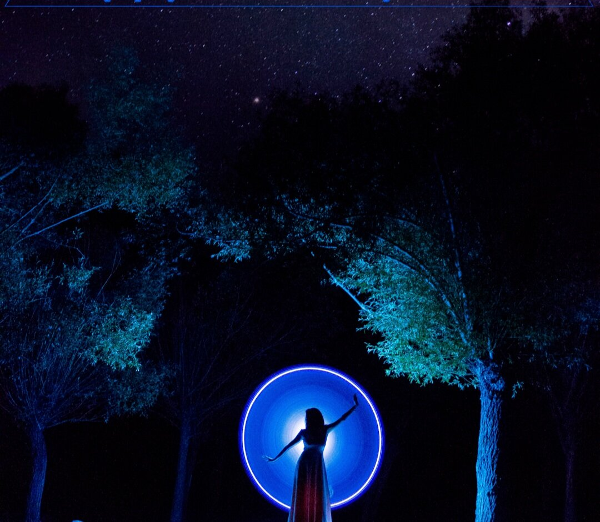
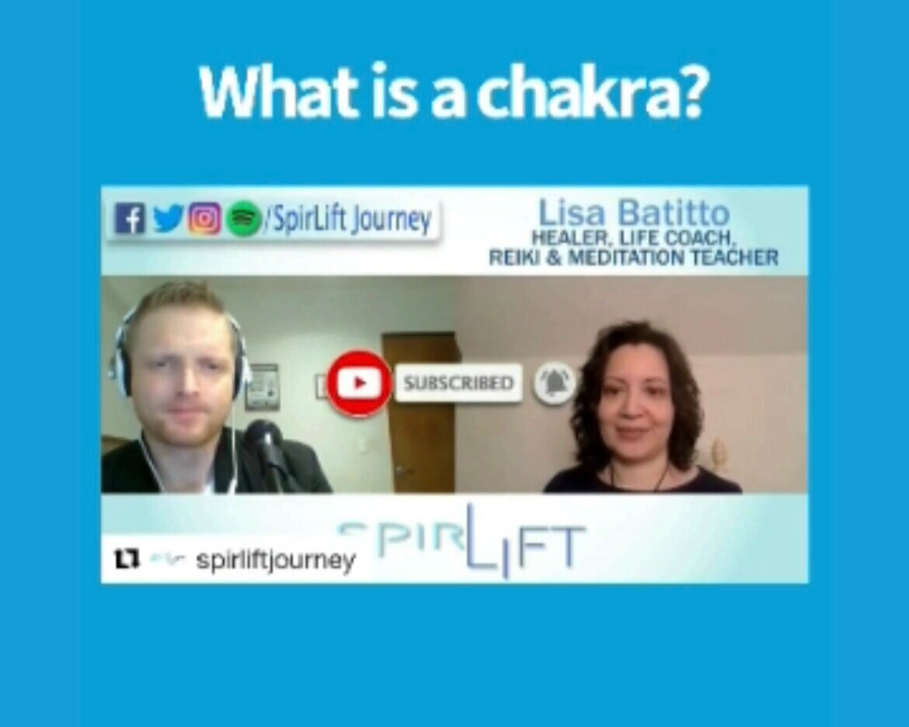

The Meaning of Healing
What is a healer and what does it mean to be “healed?”
Read BlogBlog
Thoughts on healing, spiritual life, work, and being human, written by Lisa Batitto with occasional guest contributions.
Browse
Blog
What is a healer and what does it mean to be “healed?”
Read BlogFate gives all of us three teachers, three friends, three enemies, and three great loves in our lives.
Read BlogWe are coming up on the anniversary of the year that changed the world and, in the process, our lives.
Read Blog
Astrology & Guest PostsDo you have a friend who knows something is wrong before you even say hello?
Read Blog Reiki & Energy Healing
Reiki & Energy HealingThis week we are exploring the seventh and final chakra … the crown chakra.
Read BlogI have three eyes: Two to look, One to see. ~ Bellamor ⠀ ⠀ This week we will be exploring the third eye chakra, and learning how it impacts our relationships.
Read BlogToday we are going to explore the fifth or throat chakra.
Read Blog
Reiki & Energy HealingI am so thrilled to talk about healing with SpirLift podcast.
Read Blog Reiki & Energy Healing
Reiki & Energy HealingAre you right with the man (or woman) in the mirror?⠀ ⠀ Today we are going to take a look at the fourth - or heart - chakra.
Read BlogDo you trust your gut or are you constantly second guessing yourself?⠀ ⠀ Your ability to follow your instincts is rooted in your third or solar plexus chakra.
Read BlogLet's get personal for a minute ....⠀ ⠀ Today, I’m going to talk to you about the second or sacral chakra, the chakra connected to sexuality and relationships.
Read BlogDo you build your relationships on rock or sand?⠀ ⠀ Are you the kind of person who dives right into a partnership and then wonders why it doesn’t work?
Read BlogServices
Learn about Reiki, Akashic Records, meditation, Work Trauma Coaching, and Corporate Wellness.
View Services